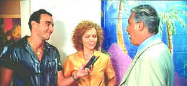

| Bossa Nova
(SE)/B+,A- |
| Columbia/2000/95/ANA
2.35 |
Bossa Nova is a delightful romantic comedy. It's a throwback to movies of another era, a
more graceful time when movie style equated with intelligence. Director Bruno Barreto directs with
sheer gossamer touch, letting the intertwining stories evolve with the grace of a lace curtain
blowing in the gentle Rio breeze.
Amy Irving plays Mary Ann Simpson, a widow teaching English in
contemporary Rio. When she meets Pedro Paulo, an attorney going through a tough time in his
marriage, sparks flare, love is in the air, and the Bossa Nova music inspires thoughts of romance.
The material evolves at a rapidly casual pace, woven with the same care as a beautiful fabric.
Revolving around the central romance is an Internet romance, a tailor who listens to his fabrics
speak, a national soccer hero, a Chinese lover, an effervescent law intern and a soulful lover of
traditional music.
 |
| You can use my telephone anytime.
©Columbia |
Amy Irving is quite wonderful as Mary Ann. She makes the most of her beauty and parlays a chipper
personality into a well developed character. Antonio Fagundes is terrific as the attorney searching
for the key to his heart. Irving shares on the audio commentary that Fagundes is the biggest star
in Brazil. It's no surprise. This guy has screen charisma. Such warmth from his eyes, great
style in his movement. The secondary characters are all well developed in simple strokes and
Barreto's casting is outstanding.
Bossa Nova is a very polished production. Barreto shoots Rio from the most
romantic perspectives possible. Gorgeous lighting, pink sunsets and a graceful camera add to the
loving construction. The music is a consistently enjoyable companion to the images.
Bossa Nova transfers to DVD with comfortable sophistication.
Colors are replicated accurately, maintaining the subtle gradations of the film. Color saturation
is intense without distortion. Take a gander at the scrumptious blue walls in Mary Ann's
apartment. No color bleeding in evidence at all. All the loving details are presented
clearly. Even the fabrics at the tailor shop have their own life. I detected very slight edge
enhancement in a few high peak transitions, otherwise Bossa Nova comes close to perfection.
The English/Portuguese Dolby Digital 5:1 Surround makes for comfortable listening. The music floats
through the home theater with effortless charm. Dialogue is clear and Yellow English subtitles
overlap slightly into the black letterbox border.
Columbia delivers Bossa Nova as a special edition. There's an audio
commentary with star Amy Irving and director/husband Bruno Barreto. There's very nice byplay
between Irving and Barreto and you learn a lot about the actors and much about the inspirations for
the film. Additional extras include a featurette, a deleted scene with commentary, theatrical
trailers and an isolated music score.
|
|
|
|

Selections from the Feature Archive
include articles on Akira Kurosawa, Frank
Darabont, Blonde Bimbos, Hollywood Street Gangs, or Vietnam: The
Hollywood Pariah, and many more....
Robert
A. Harris

Tilting at Hollywood
He's part of the dynamic duo that restored Lawrence
of Arabia, Spartacus, My Fair Lady and Vertigo. Harris rides a white horse into the for the cause
of preserving our film legacy. Click on the image to read more.

 Direct from the corridors of the Home Theater Forum, Home Theater Talk is the
newest place on the Net to discuss everything home theater. Friendly atmosphere and knowledgeable
folks are the secret ingredients. Direct from the corridors of the Home Theater Forum, Home Theater Talk is the
newest place on the Net to discuss everything home theater. Friendly atmosphere and knowledgeable
folks are the secret ingredients.
 Sight and Sound Magazine is the venerable voice of
The British Film Institute. The site includes articles and film reviews. A great resource in print
and on the Internet. Sight and Sound Magazine is the venerable voice of
The British Film Institute. The site includes articles and film reviews. A great resource in print
and on the Internet.

An on-line Home Theater magazine with excellent hardware reviews,
including thorough and responsible research. Check it out.

Looking for information about widescreen movies and hardware. The Widescreen Movie Center
is the place to go.
The American Widescreen Museum, is the ultimate resource for widescreen movie information, Martin
Hart's reliable site is a great tool for movie buffs.
 . .
The
Movie Poster Archive includes extensive poster images from the films of stars like Susan Hayward,
Kirk Douglas, Katharine Hepburn and many more. Our featured star is Cary
Grant.
|